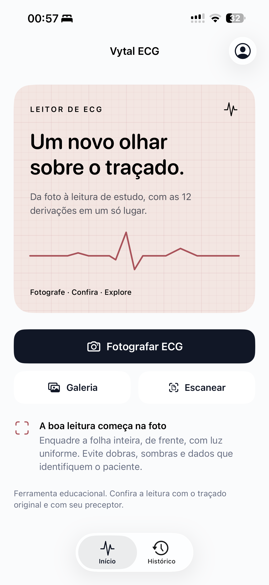

Do papel ou da tela do monitor ao sinal de 12 derivações em segundos. O Vytal ECG reconstrói o traçado, mede frequência, intervalos e eixo e apresenta hipóteses de interpretação com a evidência apontada no próprio traçado, para o médico decidir melhor e mais rápido, onde quer que o ECG esteja.

Fotografe · Confira · Explore
Feito para a rotina de quem atende: a foto que você já tira no plantão, na UBS ou no consultório vira um traçado que dá para ampliar, medir e interpretar, sem depender do aparelho que imprimiu.
Pela câmera, pela galeria ou pelo scanner de documentos. Folha inteira, de frente, com luz uniforme. Funciona com a folha impressa e com a tela do monitor do aparelho.
O app reconhece a disposição das derivações, encontra a grade, calibra tempo e amplitude e reconstrói as 12 derivações como sinal. Você compara o traçado reconstruído com a foto, lado a lado.
Frequência, ritmo, intervalos e eixo com a confiança de cada medida, e os achados como hipóteses de interpretação com a evidência apontada no traçado. Amplie derivação por derivação, revise com a leitura guiada e gere o PDF para o prontuário ou para a discussão do caso.
O traçado é reconstruído como sinal e as medidas são calculadas sobre ele, com regras explícitas e verificáveis. Funciona com o ECG de qualquer aparelho, impresso ou na tela. Quando a foto não permite uma leitura íntegra, o app diz isso, em vez de inventar.
Cada derivação vira um sinal contínuo que você amplia e percorre. Lacunas da foto são preservadas como lacunas, nunca preenchidas.
FC, PR, QRS, QT e QTc, eixo elétrico e regularidade do ritmo, com indicação de confiança por medida e da derivação de onde cada uma saiu.
Folhas 3×4 com tira de ritmo, 6×2 e 12×1, impressas, escaneadas ou fotografadas na tela do monitor. A grade da própria foto define a base de tempo e a amplitude.
3×4 · 6×2 · 12×125 mm/s e 10 mm/mV por padrão, com ajuste quando o exame foi feito em outra escala. O app informa como calibrou e o que a grade mediu.
Ritmo, condução, sobrecargas e alterações de repolarização aparecem como hipóteses, com a evidência apontada no traçado e as limitações da foto declaradas. A leitura guiada ajuda a revisar antes de decidir.
Relatório vetorial com a foto, o traçado e as medidas para anexar ao prontuário ou compartilhar com a equipe. Histórico local com busca e filtros, sem identificação do paciente.
O leitor só chega ao app depois de passar por uma bancada fixa, e a validação clínica é a próxima etapa do caminho regulatório. O que não melhora a bancada não entra; o que piora, sai.
Exemplo ilustrativo de uma folha 3×4 com tira de ritmo, com a confiança por medida.
Valores ilustrativos. A leitura de cada exame depende da foto: o app informa a confiança e o que não conseguiu medir.
Apoio à leitura para o profissional de saúde, no ponto de atendimento e fora dele. A decisão continua sendo do médico; o Vytal ECG entrega o sinal, as medidas e as hipóteses para que ela seja mais rápida e mais bem fundamentada.
Uma segunda leitura em segundos, no aparelho que está no bolso: ritmo, intervalos, eixo e hipóteses com evidência, antes de a discussão com o cardiologista começar.
Onde não há cardiologista à mão: o ECG impresso pelo aparelho da unidade vira sinal, medidas com confiança explícita e um PDF para o prontuário e para o encaminhamento.
Para estudantes, residentes e serviços que ensinam: traçado ampliável, medidas e hipóteses para treinar o olhar com exames reais, sem coleta de dados de pacientes.
O Vytal ECG é desenvolvido como software de apoio à leitura de ECG para profissionais de saúde. Hoje está em validação e ainda não é dispositivo médico registrado na Anvisa: as hipóteses são apoio ao raciocínio, e o laudo e a conduta continuam sendo do médico, com o exame original como referência.
O roadmap inclui a validação clínica e o enquadramento como software como dispositivo médico, com dossiê técnico e evidência publicada. A privacidade é pensada desde a concepção: a foto deve ser enquadrada sem dados que identifiquem o paciente, e o app orienta isso antes de cada captura.
Sim. O leitor reconhece a grade tanto da folha impressa quanto da tela do aparelho ou do sistema de imagens do hospital, e usa a própria grade para calibrar o tempo. Enquadre a tela inteira, de frente, evitando reflexos.
Folhas 3×4 com uma ou três tiras de ritmo, 6×2 com ou sem tira e 12×1, nas escalas padrão de 25 mm/s e 10 mm/mV. Outras escalas podem ser informadas na calibração. Formatos que o app ainda não reconhece são recusados com uma mensagem clara.
Ele entrega o sinal reconstruído, as medidas e hipóteses de interpretação com a evidência apontada no traçado, sempre com as limitações da foto declaradas. O laudo e a conduta continuam sendo do médico, com o exame original como referência.
Ainda não. O Vytal ECG está em validação e é oferecido como apoio à leitura para profissionais de saúde. A validação clínica e o enquadramento como software como dispositivo médico fazem parte do roadmap; enquanto isso, o app não substitui o laudo nem o julgamento clínico.
O app está em acesso antecipado para profissionais de saúde, distribuído por TestFlight para iPhone e iPad, antes da publicação nas lojas. Para receber o convite, escreva para contato@vytalsaude.com.br.
Sim. O acesso antecipado é liberado por convite, com conta Vytal. Serviços e instituições podem ter acesso pelo vínculo institucional.